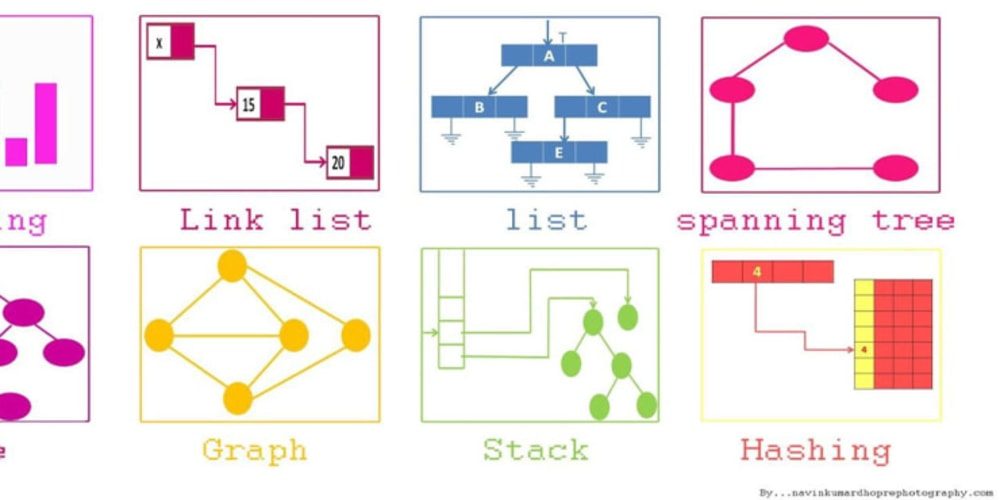

On this experiment we are interested in how people make decisions between two options.
We want to compare the paths from a given point, to the option the user decided to pick, whereas we focus
on Approach-Approach decisions (deciding between two positive options) or Avoidance-Avoidance decisions (deciding between two negative options).
We use mouse tracking methods to understand how people make up their minds, when do they hesitate more etc.

javac (pronounced "java-see") is the primary Java compiler included in the Java Development Kit (JDK) from Oracle Corporation.
The compiler accepts source code conforming to the Java language specification (JLS) and produces Java bytecode conforming to the Java Virtual Machine Specification (JVMS).
On a summer course, Object Oriented Programming, I had an exercise - to implement a simplified javac.

This is a group data science project, made in 40 hours during the hackacthon of "Intro to Machine Learning" course in the Hebrew University in June 2021.
We chose the second challenge of the hackacthon - "Help the Chicago Police Prevent Crime!"
The primary challenge isclassification of crime type: you are required to build a learning system that, given crime feature vectors
(see below description) predicts which kind of crime it is, from 5 classes.
The secondary challenge is crime prevention. Every day you can send 30 police cars to the city -
you direct a car to a specific location and a specific time of day. If a crime was about to happen up to 500m from thelocation you specified and up to 30 minutes before or after the time you specified, you prevented a crime! You are required to build a learning system that, given a date in the future, will output 30(x,y,time) combinations - where time is during that day from midnight to midnight.
Police cars will be sent to these locations at these times

My notebook from Data Structures course.

in process